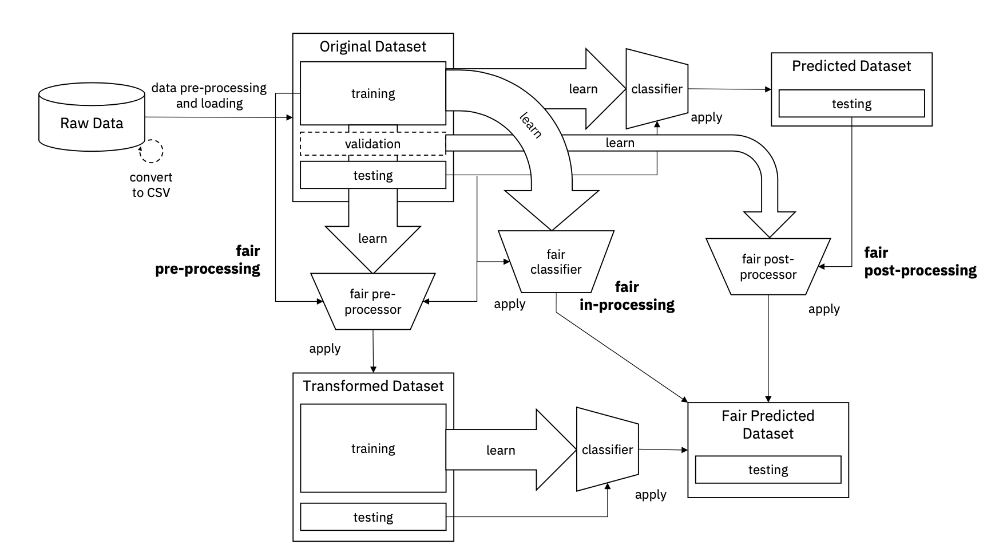
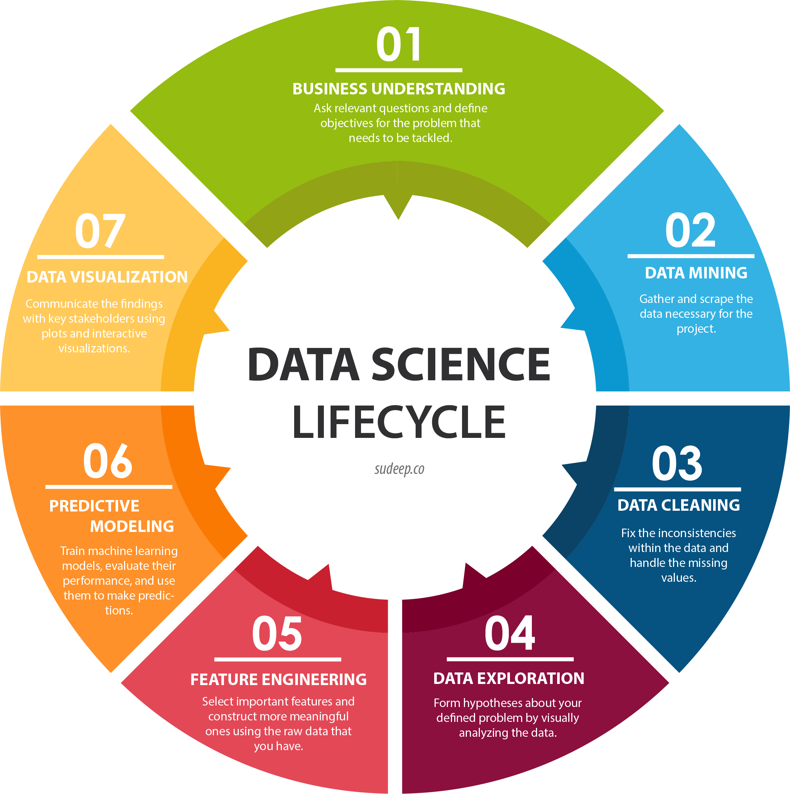
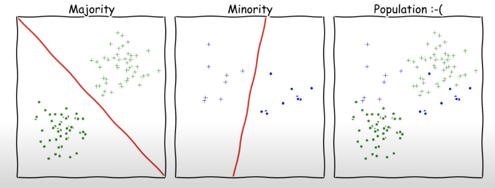

Fairness
Introduction
An increasing number of information systems take decisions based on statistical inference rules, acquired through machine learning techniques. Especially in decision-critical contexts such as predictive policing, lending decisions in credit scoring or triage and allocation of health care resources discrimination is to be avoided. In order to avoid encoding discrimination in automated decisions, multiple fairness aspects needs to be accounted for.
Definition
equal in outcomes

Legally recognized 'protected classes'
Depending on the context the stakeholders need to decide during the model creation process which systemic difference between groups should be available to the model and which should be excluded. These sensitive features should either not be used or very carefully, since they are protected by law.
- Race (Civil Rights Act of 1964)
- Color (Civil Rights Act of 1964)
- Sex (Equal Pay Act of 1963; Civil Rights Act of 1964)
- Religion (Civil Rights Act of 1964)
- National Origin (Civil Rights Act of 1964)
- Citizenship (Immigration Reform and Control Act)
- Age (Age Discrimination in Employment Act of 1967)
- Pregnancy (Pregnancy Discrimination Act)
- Family Status (Civil Rights Act of 1968)
- Disability Status (Rehabilitation Act of 1973; Americans with Disabilities Act of 1990)
- Veteran Status (Vietnam Era Veterans Readjustment Assistance Act of 1974)
- Genetic Information (Genetic Information Nondiscrimination Act)
- Sexual orientation (in some jurisdications)
Application Examples
- Medical Testing and Diagnosis
- Making decisions about a patient’s treatment may rely on tests providing probability estimates for different diseases and conditions.
- Here too we can ask whether such decision-making is being applied uniformly across different groups of patients.
- Hiring
- Lending
- School Admission
- Criminal Justice
Counterexamples
Examples of Algorithmic Unfairness 1. COMPAS risk tool * Assess a defendant’s probability of recidivism. * Tool’s errors were asymmetric: African-American defendants were more likely to be incorrectly labeled as higher-risk than they actually were, while white defendants were more likely to be incorrectly labeled as lower-risk than they actually were. * White defendants who went on to commit future crimes were assigned risk scores corresponding to lower probability estimates in aggregate. 2. Apple Credit Card * Apple Card's Credit Scoring Algorithm was investigated after discriminating against women. 3. Apple Credit Card
Fairness Metrics within the ML Pipeline
{class=center width=512px}
Business Understanding
- Ask relevant questions and define objectives for the problem that needs to be tackled
Data Mining
Gather and scrape the data necessary for the project
Data Cleaning
Fix the inconsistencies within the data and handle the missing values
- Class imbalance: The number of observations for each class deviates substantially from the proportions
- Over- and Undersampling
- Unfairness from Underrepresentation
{: align=center}
Data Exploration
Form hypotheses about your defined problem by visually analyzing the data
Feature Engineering
Predictive Modeling
Data Visualization
Fairness Metrics
(1) and (2) are widely used ideas inspired by anti-discrimnation legislation
1. Disparate Treatment
A practice that intentionally disadvantages/discriminates a group based on a protected feature (e.g the pay difference between men and women at the same position, ). The treatment or process should not depend on a sensitive feature encoding group membership.
How to check for Disparate Treatment
Depending on the context certain attributes are considered to be protected. For hiring decisions in Germany for example the exmployer is not allowed to use certain information e.g (pregnancy status, wish for a child, relationship status). The user of our tool could be presented with all attributes the model is taking into consideration. He could then select every attribute he would consider in this context. On the other hand side it would be possible to define a default list of protected attributes (gender, religion, race) and let their use negatively influence the fairness score.
2. Disparate Impact
Is what occurs when an organization’s actions, policies, or some other aspect of their processes inadvertently result in unintentional discrimination against people who are in a protected class. Even though the policy, action, or item in question would otherwise appear to be neutral. What matters is the outcome, not the intent.
How to check for Disparate Impact
3. Statistical Parity
In some cases statistical parity is a central goal (and in some it is legally mandated). Statistical parity, ensures that the overall proportion of members in a protected group receiving positive (negative) classification are identical to the proportion of the population as a whole.
4. Envy Free Fairness
In an envy free assignment every individual does not want to receive the anothers' assignment. E.g cake cutting where the slices have equal size.
4. Disparate Mistreatment
Classifier might make decisions for people belonging to different social groups with different misclassification rates. When the ground truth for historical decisions is available, disproportionately beneficial outcomes for certain sensitive attribute value groups can be justified and explained by means of the ground truth. Therefore, disparate impact would not be a suitable notion of unfairness in such scenarios. Disparate Mistreatment arises when the false positive rates (FPR) and false negative rates (FNR) are substantially different between groups. Avoiding Disparate Mistreatment requires to establish Group Error Parity For this the prediction error (FPR, FNR) should be similar across groups and therefore independant of protected feature Es=0[f(x,s), y] = Es=1[f(x,s), y]
Process
- Let the user select the variables that he considers to be protected from the training dataset.
- Some metrics need to be scored by the user. For example the proper class balance and for example the question if the problem or question the model is trying to solve or predict is very hard to be assessed automatically. Therefore the user scores that fairness on a level from [0,1] or [0,100].
- Compute metrics based on the protected attributes for example group fairness, disparate treatment score, disparate impact score etc.
- Based on the taxonomy an overall fairness score can then be created.
Summaries
| Year | Author | Title | Context | Content |
|---|---|---|---|---|
| 2012 | Martin Glaser | "Racial profiling is a discriminatory practice that undermines fundamental civil rights while failing to promote law enforcement goals" | Racial Profiling | Racial profiling is of unjust nature |
| 2015 | Amit Datta | "Automated Experiments on Ad Privacy Settings" | Advertising | - Setting the gender to famel results in getting fewer instances of an ad related to high paying jobs than setting it to male. - The amoral status of an algorithm does not negate its effects on society. - Manifold interactions can lead to discrimination, whereby not one party can be blamed solely. |
| 2016 | John Kleinberg | "Inherent Trade-Offs in the Fair Determination of Risk Scores" | Law Healthcare |
- Three fairness notions are developed and it is shown that under non trivial conditions it is impossible to satisfy all three simultaneously. |
| 2016 | Muhammad Zafar | "Fairness Beyond Disparate Treatment & Disparate Impact: Learning Classification without Disparate Mistreatment" | ||
| 2019 | Ziad Obermeyer | Dissecting racial bias in an algorithm used to manage the health of populations | Healthcare | - Show that a widely used algorithm, typical of this industry-wide approach and affecting millions of patients, exhibits significant racial bias. - At a given risk score, Black patients are considerably sicker than White patients, as evidenced by signs of uncontrolled illnesses. |
Taxonomy
| Stage | Metric | Description | Unit | Weight |
|---|---|---|---|---|
| Business Understanding | Question Fairness | Is the question we are trying to answer fair in itself? It would be considered fair to recommend a preferred treatment to a patient, but the application of machine learning for racial profiling would be considered unfair. | [0,1] | 0.2 |
| Data Mining | Biased Data |
Does the data possibly contain a bias which was introduced during the data collection? (e.g selection bias) | ||
| Data Cleaning | Class Balance | To what degree does the sample (training dataset) represent the expected class distribution of the real underlying population? | ||
| Data Exploration | - | - | - | - |
| Feature Engineering | - | - | - | - |
| Predictive Modeling | Disparate Treatment | Depending on the context certain features (gender, religion, race) are considered to be protected. Does the model use a at least one protected feature for its prediction? | [0,1] | 0.2 |
| Disparate Impact | ||||
| Disparate Mistreatment | ||||
| Statistical Parity |